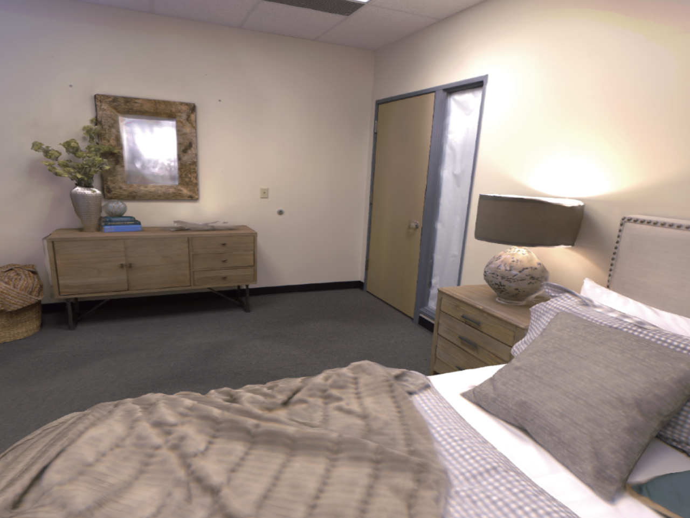

|
Lechen Zhang I'm a graduate student at Creative Machines Lab in the Columbia University, where I am supervised by Professor Hod Lipson. |
|
ResearchI'm interested in intersection of computer vision, deep learning, generative AI, and robotics. Most of my research is about inferring the physical world (kinematics, dynamics, depth, color, etc) from sensor observations. |
 |
AutoURDF: Unsupervised Robot Modeling from 4D Point Cloud
Jiong Lin, Lechen Zhang, Kwansoo Lee, Jialong Ning, Judah Goldfeder, Hod Lipson CVPR 2025 (Acceptance Rate: 22.1%) project page / arXiv An unsupervised approach for understanding robot motion and constructing description files for unseen robots from point cloud frames. |
|

|
MoD-SLAM: Monocular Dense Mapping for Unbounded 3D Scene Reconstruction
Heng Zhou, Zhetao Guo, Yuxiang Ren, Shuhong Liu, Lechen Zhang, Kaidi Zhang, Mingrui Li, IEEE Robotics and Automation Letters (RA-L) arXiv Monocular SLAM with metric depth estimation and Gaussian-based unbounded scene representation. |
|
|
Soft Robot Neural Evolution with LLMs Supervision
Lechen Zhang ICRA 2024, Workshop on Co-design in Robotics, Oral project page / arXiv Voxel-based soft robot fast evolution with LLMs supervision and CUDA-based spring-mass simulation and neural network structure evolution. |
Project |
|
|
Rotaray Positional Encoding for Linear Attention Vision Transformers
IEOR E6617 Machine Learning & High-Dimensional Data Analysis course project advised by Prof. Krzysztof Choromanski code / report Implemented a linear attention vision transformer with axial and mixed diagonal rotary positional encoding and applied it to the task of image classification. |
|
|
Neural Dynamics for Articulated Motion Prediction
MECS 6616 Robot Learning course project advised by Prof. Matei Ciocarlie Implemented a deep neural network model for predicting the motion of articulated mechanisms. The model can be generalized to unseen input configurations. |
|
|
Monocular Metric Depth Informed Neural Radiance Fields
ECBM E4040 Neural Networks and Deep Learning course project advised by Prof. Zoran Kostić Implemented a monocular metric depth estimation method incorporated with Neural Radiance Fields. Improved PSNR by 13% compared to the SNeRG. |
|
|
RoboBIM: An Autonomous Building Information Modeling System
Bachelor thesis project advised by Prof. Adam Rushworth Built an industrial level building information modeling system hardware and software stack based on ROS that can automatically planning and mapping in indoor environments. |
|
Website template is from source code by Jon Barron. |